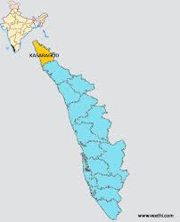
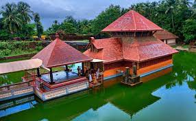

The northernmost district of Kerala, Kasaragod is renowned for its hills, forts and water bodies. The coir and handloom industry here are extremely famous around the world. The place is also popular for its ancient temples and rich biodiversity. It is an important border district as well that regulates trade with a lot of neighbouring States. Legends regarding the district greet you at every turn on a visit here. A trip here is incomplete without visiting Bekal Fort, the most majestic and well maintained fort in South India.
Kasaragod
General Information
Area: Area: 2,966 km²
Population:13.9 lakhs
Official Language: Malayalam, English

Bekal Fort
The 300 years old defensive mechanism which is the largest and well-preserved fort makes it one of the best Kasaragod tourist place. You can get an enthralling view of the mesmerizing Arabian sea from the fort’s observation tower which was once used to fire the cannons!

Ananthapura Lake Temple
Carved with mythological tales of Puranas and a hidden cave leading to a pond, \ this temple is well preserved for astonishing reactions all for its magnificent architecture. God’s own country has abundant homes of the lord. However, this particular locale is amongst the most visited places in Kasaragod.

Chandragiri Fort
Drowned in history and residing on hill ruins this fort offers a perfect sunset view to its visitors. A serene locale with a panoramic view on display is a picture perfect location. This bizarre fort is squarish in shape and is seated beautifully 150 feet above the sea level.